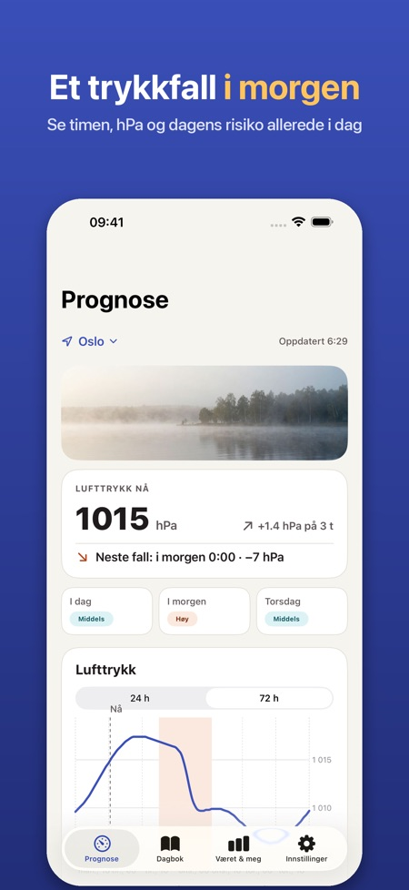
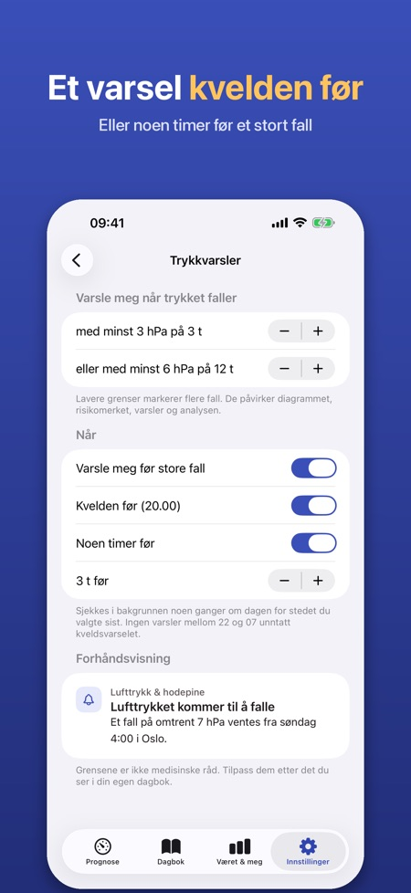
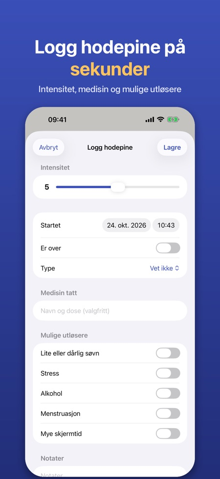

Trykkprognose og dagbok. Høststormene gir raske trykkfall. Se dem komme time for time, få et varsel kvelden før og logg hodepine med ett trykk.



Mange opplever hodepine eller migrene når lufttrykket faller raskt. Appen viser lufttrykket time for time, markerer de store fallene og hjelper deg å se om været henger sammen med hodepinen din.
LUFTTRYKK TIME FOR TIME
• Diagram over lufttrykket de neste 24 timene (72 timer med Pro) for der du er eller en by du velger
• Fallsoner markeres: minst 3 hPa på 3 timer eller 6 hPa på 12 timer – grensene kan endres
• Et enkelt risikomerke per dag (lav, middels, høy) som bare bygger på trykkendringen og forklares i appen
• Luftfuktighet og temperaturendring vises også
VARSEL PÅ FORHÅND (PRO)
• Varsel kvelden før eller noen timer før et stort trykkfall
• Appen sjekker prognosen i bakgrunnen for stedet du valgte sist
HODEPINEDAGBOK
• Logg med ett trykk, også rett fra et varsel: intensitet 0–10, start og slutt, type, medisin og om den hjalp, notater
• Mulige utløsere: søvn, stress, alkohol, menstruasjon, skjermtid
• Månedskalender med trykkfallsdager, detaljer for hver oppføring med trykket rundt starten og en oversikt over utløserne du har logget
PÅVIRKER VÆRET MEG? (PRO)
• Etter 30 dager med dagbok sammenlignes hodepinedagene dine med dagens trykkfall: enkle tall og diagrammer, ingen medisinsk konklusjon
• Legerapport: en PDF for de siste 30 eller 90 dagene eller en egen periode
WIDGET (PRO)
• Lufttrykket nå, trenden og neste store fall på Hjem-skjermen eller låseskjermen
PRO
Årsabonnement eller ett engangskjøp for alltid. Uten Pro beholder du 24-timersdiagrammet og dagboken. Ingen konto og ingen reklame.
PERSONVERN
Dagboken blir på iPhonen din. Bare anonym bruksstatistikk, som du kan slå av. Værdata kommer fra Apple Vær.
Appen er ikke medisinsk utstyr og gir ingen medisinske råd eller diagnoser. Hvis hodepinen endrer seg eller er kraftig, kontakt lege.